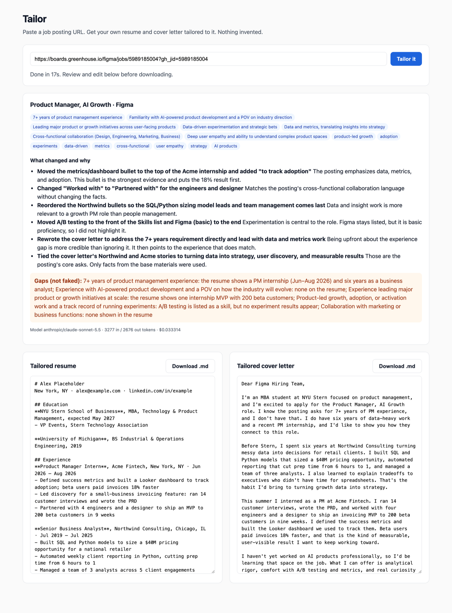

Product Showcase (Prototype / Live App / 2-Min Video)
Current Status: Build 1: rough local prototype (FastAPI + one HTML page, runs with ./app/run.sh)
Demo: Screenshot below from a real run against Figma's "Product Manager, AI Growth" posting on Greenhouse (Nov 8). The resume shown is a placeholder, not mine yet.

Real run: 17 seconds, 3,277 input / 2,676 output tokens, $0.033 on anthropic/claude-sonnet-5.5 via OpenRouter.
Living PRD (Product Requirements Document)
Updated every week as we test with real users and learn what works.
1. Target User & The Job to Be Done
Who is this for? Tech MBA students at NYU Stern applying to PM and tech roles. First users: me (Jason) and [classmate name]. We're both in recruiting season right now and sending out applications every week.
The painful "Before" workflow: For every application I read the posting, pick out the keywords, manually rewrite resume bullets to match, then rewrite the cover letter. It takes 45–60 minutes per job, and it's usually 1am when I'm doing it. So half the time I give up and send the generic version, which is exactly what I'm trying not to do.
The "After" workflow with this product: Paste the job URL. About 60 seconds later I have a tailored resume and cover letter side by side, plus a short list of what changed and why. I review it, fix anything that sounds off, and download.
2. Scope & Explicit Non-Goals
- In Scope (Core Workflow): Job URL in → fetch the posting and pull out the role, company, must-have skills, and keywords → rewrite my base resume and base cover letter to match → show what changed → download.
- Out of Scope #1: No auto-applying. Tailor hands me documents; I decide where they go.
- Out of Scope #2: No LinkedIn account connection or LinkedIn scraping. If a posting page is blocked, I paste the description in.
- Out of Scope #3: No inventing experience. Tailor only reframes and reorders what's already in my resume. No new skills, titles, metrics, or employers.
3. How It Works Under the Hood & Riskiest Assumption (Week 2+)
Riskiest Assumption: [What is the #1 technical or user risk that could sink this product?]
Simple Architecture: [User Input] → [Your App / Server] → [AI Model / Tool] → [Output]
4. Unit Economics & Analytics Snapshot (Updated Weekly)
Cumulative Build Spend
$0.07 OpenRouter + [X] agent
Est. Cost Per User Run
~$0.035 (2 real runs)
User Evidence (Analytics from Build 2)
[Not yet measured]
Sponsor Call (Week 6)
TBD
Weekly Build Log
Build on at least two separate days each week outside class, including the November 3 break. Push commits and log actual progress, failures, PRD changes, costs, and hours here. All build deadlines are noon, New York time.
Build 1 · Intent.md & Throwaway Prototype (Due Nov 9)
- What shipped: PRD v1 above, plus a local prototype in
/app (screenshot). Paste a job URL, and it fetches the posting, makes one OpenRouter call, and shows the tailored resume and cover letter side by side (editable), a "what changed and why" list, a "gaps (not faked)" list, and markdown download buttons. If the fetch fails or the URL is LinkedIn, a textarea shows up so you can paste the description instead. Each run logs its token usage and cost to the terminal. 5 deterministic tests cover extraction, the LinkedIn block, and the invented-number check.
- What works (verified Nov 8): Two full runs on real public postings: Notion "Product Manager, Connections" (Ashby), 19.6s, $0.036; and Figma "Product Manager, AI Growth" (Greenhouse), 17s, $0.033. Fetching also works on a Spotify PM posting on Lever. Both runs kept every number from the base resume (the invented-number check found nothing), and both openly listed gaps like "7+ years of PM experience" and "no AI product experience" instead of faking them. About 20 seconds end to end, well under the 60-second goal.
- Things learned with AI: (1) "Fetch the page" isn't one thing. Greenhouse and Lever serve plain HTML, but Ashby pages are rendered by JavaScript (a plain fetch got 37 characters of text). The fix was reading the
JobPosting structured data that Ashby embeds for search engines. (2) A prompt rule isn't a guarantee. Even with "never add skills, titles, metrics, or employers," the Figma run added "to track adoption" to my dashboard bullet, which my resume never claimed. Numbers can be checked automatically, but wording like this can't yet. (3) [X: Terminus Episodes 1 and 2 takeaways]
- What broke / changed in PRD: The first real run failed with an OpenRouter HTTP 402. With no
max_tokens set, OpenRouter reserved the model's full 65k-token output against my key's credit limit. Capping it at 3,500 fixed it (runs use about 2.7–2.9k). The LinkedIn fallback message said "paste" twice, also fixed. I put my API key in the tracked .env.example instead of the ignored .env. It was caught before any commit and moved. PRD scope didn't change, but there's one gap against it: "show the changes" is currently a list the model writes about itself, not a real diff, and the "to track adoption" slip shows why that matters. Also, so far it's only been tested on a placeholder resume, not mine.
- Cost & time this week: $0.07 OpenRouter (2 successful runs: $0.035842 + $0.033314; the failed 402 run cost nothing) + [X] coding agent · [X] hours
Build 2 · Smallest Local Version & PostHog (Due Nov 16)
- What shipped: [Local working slice, PostHog verified on this page and the local app, PRD v2, and local setup in AGENTS.md]
- What broke / changed in PRD: [Fill in]
- Cost & time this week: $[0.00] · [0] hours
Build 3 · Build.exe: The Core Workflow (Due Nov 23)
- What shipped: [End-to-end workflow working with real inputs + PostHog funnel events]
- What broke / changed in PRD: [Fill in]
- Cost & time this week: $[0.00] · [0] hours
Build 4 · Test.py: Choose Track A or Track B (Due Nov 30)
- Chosen track: [A: 10-case domain eval and one outside target-user review; OR B: 3–5 outside users and replay findings]
- Results and improvements: [Before/after evidence; for Track B, fixes to the top three friction points]
- PRD v4 changes: [What the evidence changed]
- Cost & time this week: $[0.00] · [0] hours
Build 5 · Ship.installer: Launch Ops, Rollback Check & 2-Min Video (Due Dec 7)
- Launch Ops & Safety: [Verified no exposed keys, set spend cap, tested 2-minute rollback]
- 2-Minute Video & Final Polish: [Link/embed above]
- Cost & time this week: $[0.00] · [0] hours